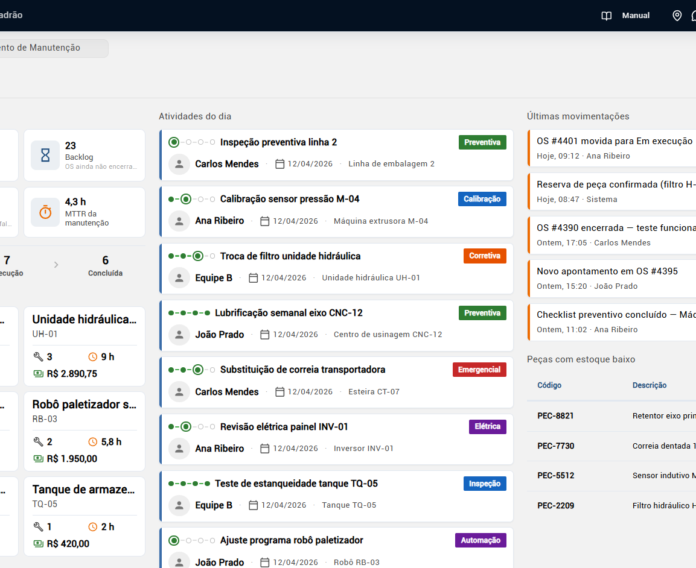
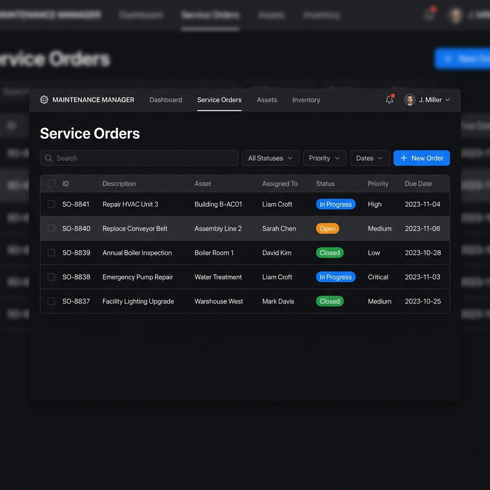
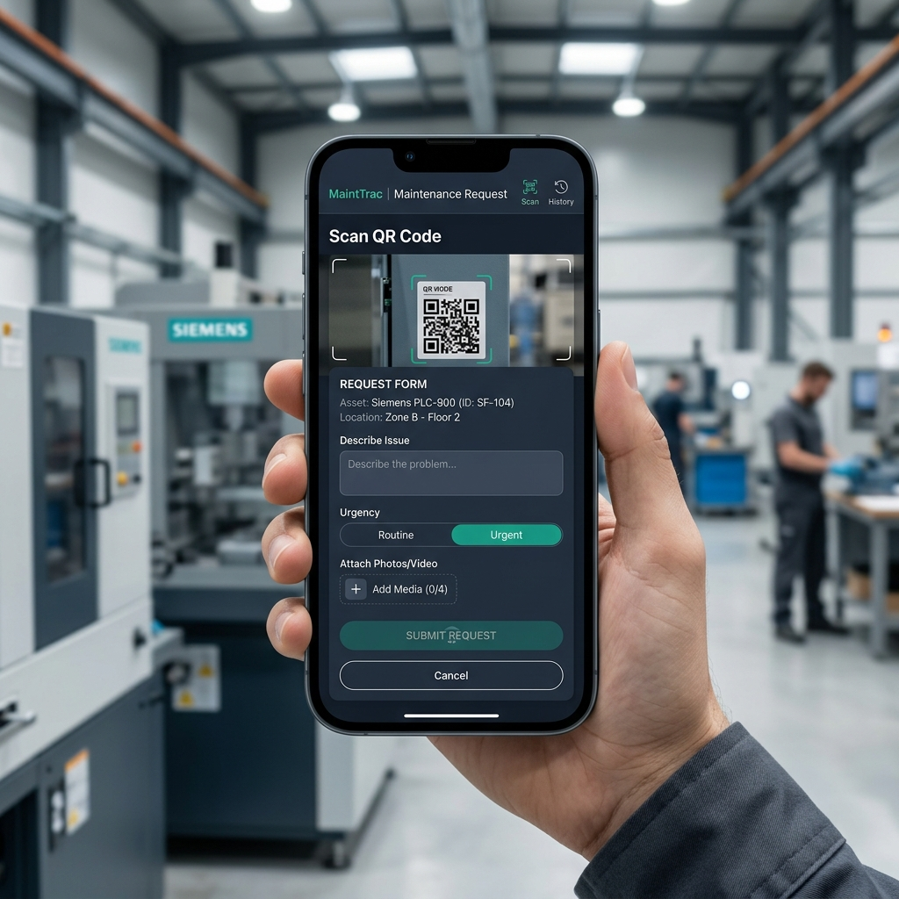
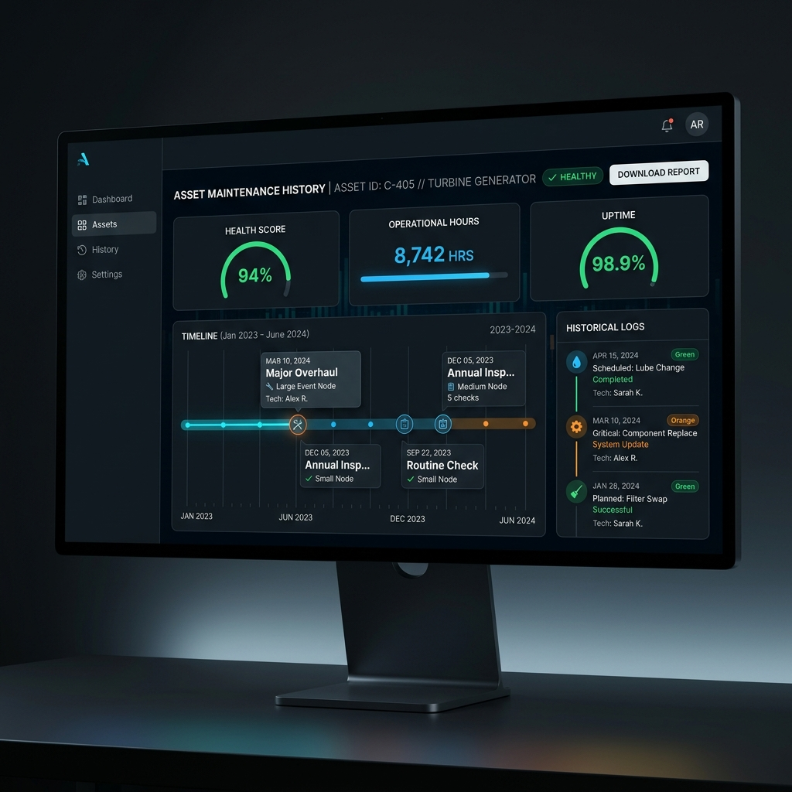
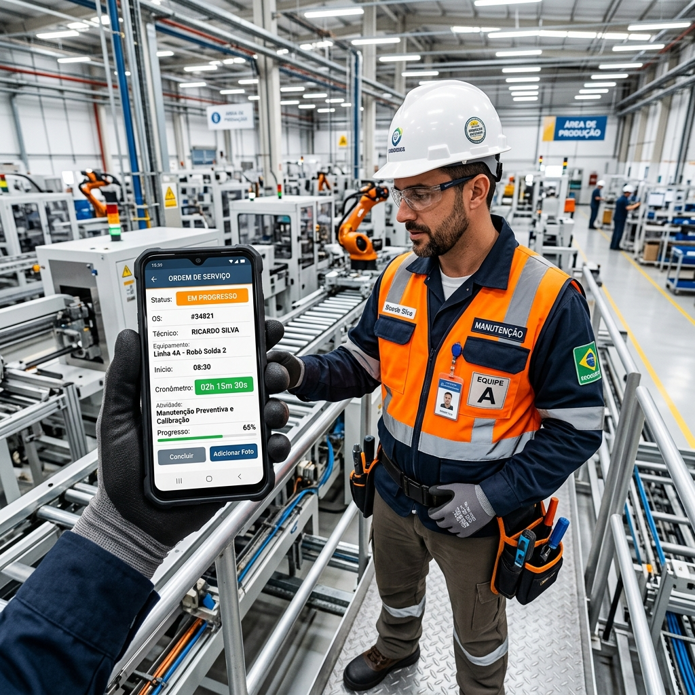

Gerenciamento de Ativos
Controle total da sua planta com árvore de ativos completa, locais de instalação e subconjuntos.
- • Identificação via QR Code por máquina
- • Anexo de manuais e fotos técnicas
- • Histórico completo de intervenções
Centralize ativos, ordens de serviço, peças, histórico e execução da manutenção em uma plataforma simples para pequenas e médias indústrias.


Centralize todas as ordens em um só lugar, com acompanhamento em tempo real do status e técnico responsável.

Receba pedidos via QR Code ou aplicativo, padronizando a entrada de dados da produção.

Acesse instantaneamente a linha do tempo de manutenções de cada máquina para decisões rápidas.
Da abertura da solicitação até a execução no celular, com histórico por ativo, peças utilizadas e indicadores de controle.
Controle total da sua planta com árvore de ativos completa, locais de instalação e subconjuntos.

Automatize seu plano de manutenção e nunca mais perca uma preventiva por falta de controle.

Dê adeus ao papel. O técnico recebe, executa e finaliza a ordem de serviço direto no celular.
Organize suas máquinas e componentes principais.
Pedidos via QR Code ou criados pela produção.
Fluxo guiado, fotos, voz e peças consumidas.
Status em tempo real e dashboards de controle.
Sem depender de papel ou descrição solta. O sistema conduz o fluxo da execução e coleta dados melhores da operação.
| Desafio | Como era (Caos) | Com MESTTI CMMS |
|---|---|---|
| Ordens de Serviço | Papel, WhatsApp ou "no grito" | Centralizadas e rastreáveis na nuvem |
| Histórico de Ativos | Perdido em arquivos ou planilhas | Completo e acessível via QR Code |
| Execução do Técnico | Manual e sem padronização | Guiada pelo Celular com Checklists |
| Rastreio de Peças | Amador, peças somem sem registro | Baixa obrigatória vinculada à OS |
| Visibilidade Gerencial | Dúvida sobre o que está atrasado | Dashboard real-time de pendências |
Veja na prática como o CMMS da Mestti pode organizar ativos, ordens, execução e histórico da sua manutenção.